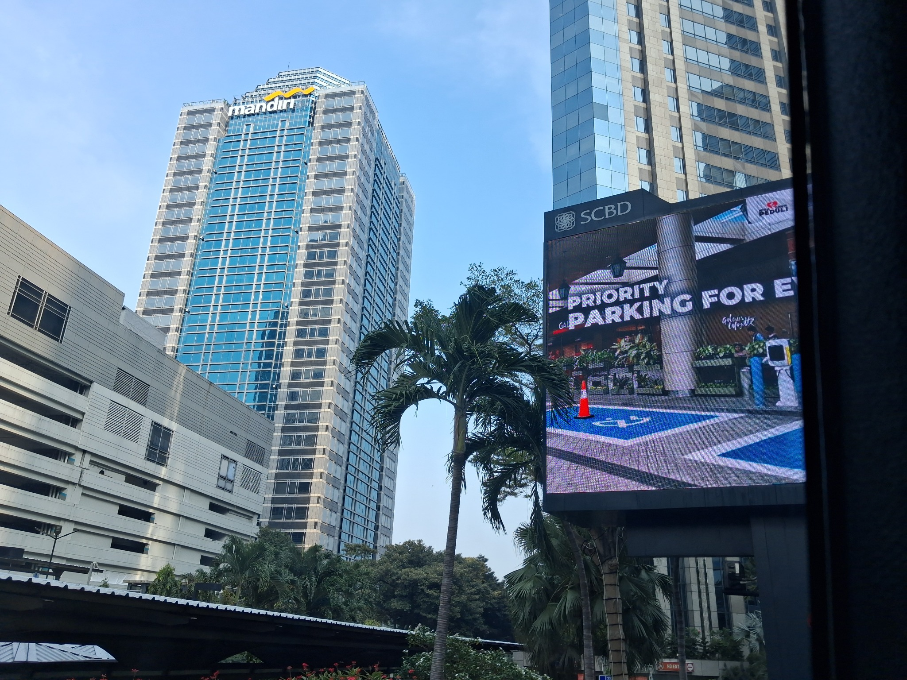
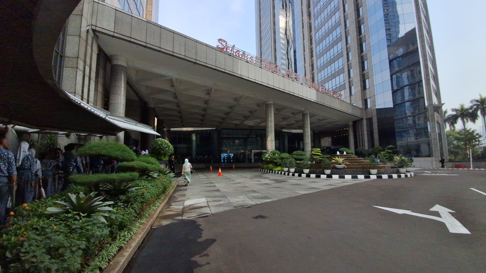
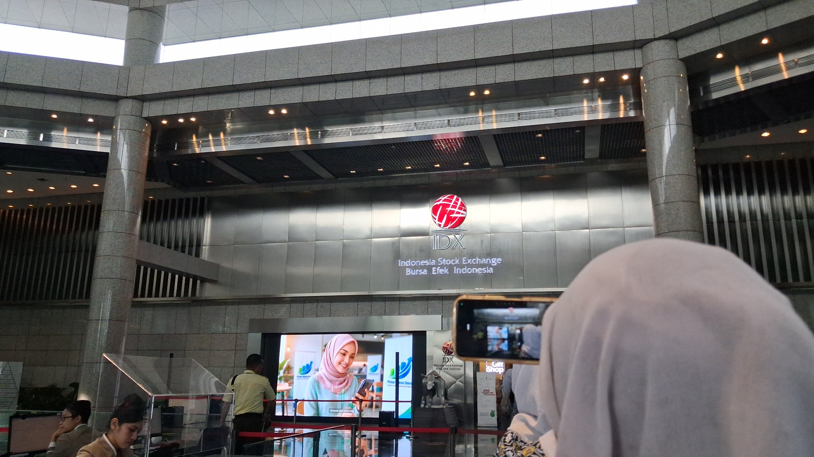
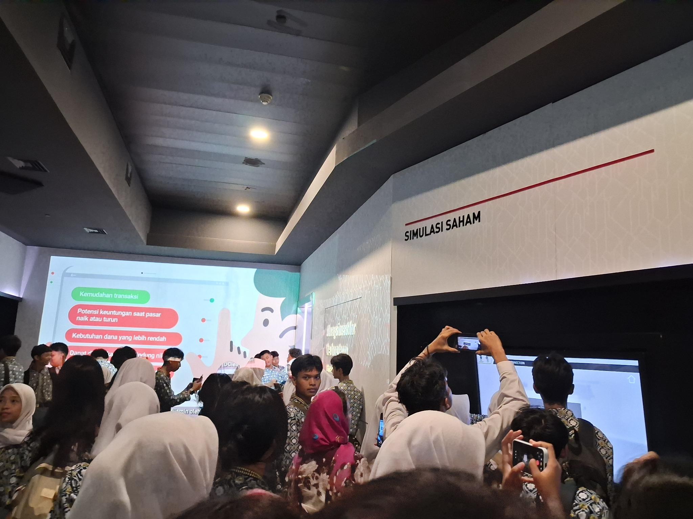
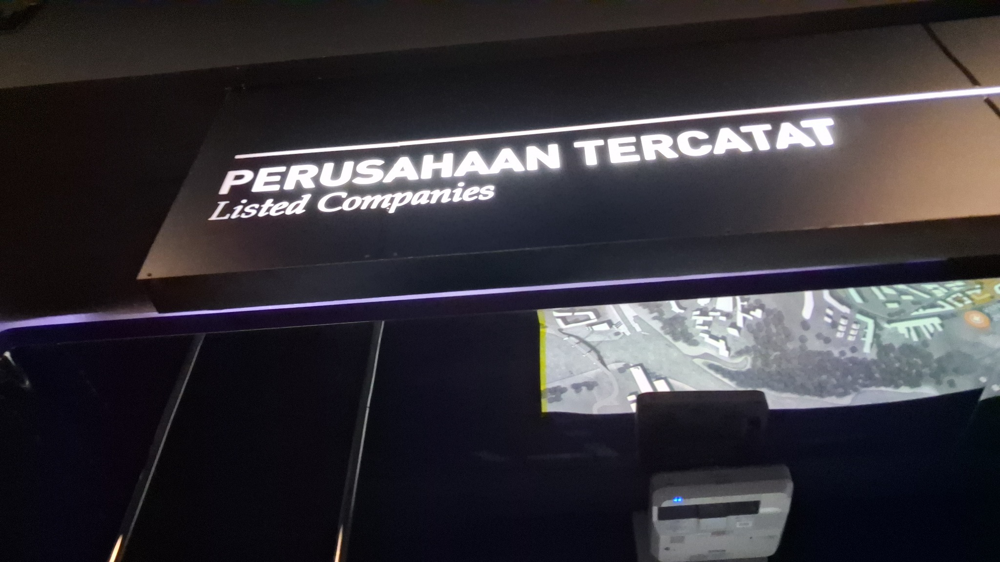
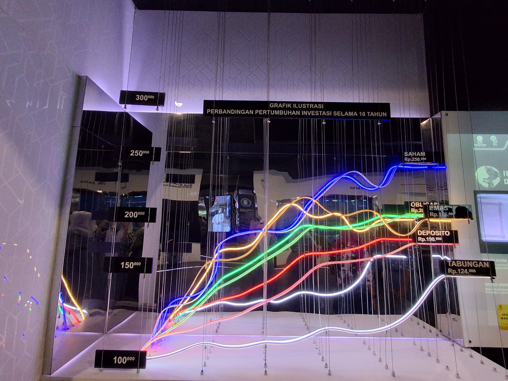
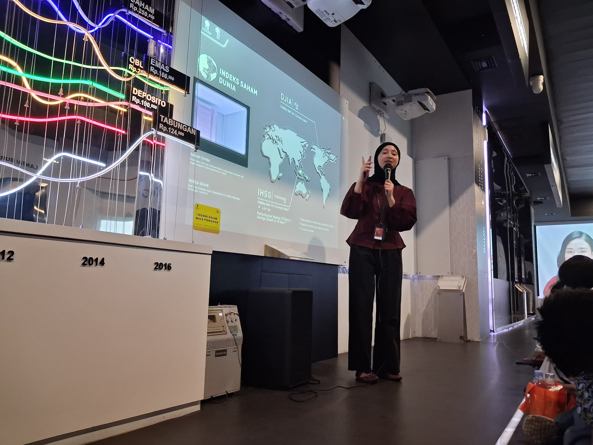
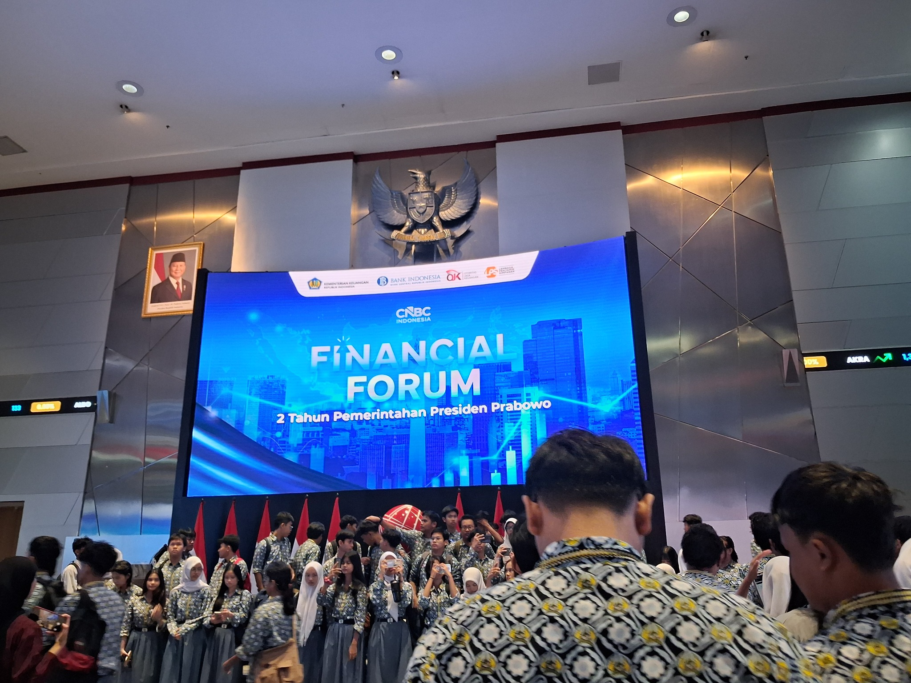
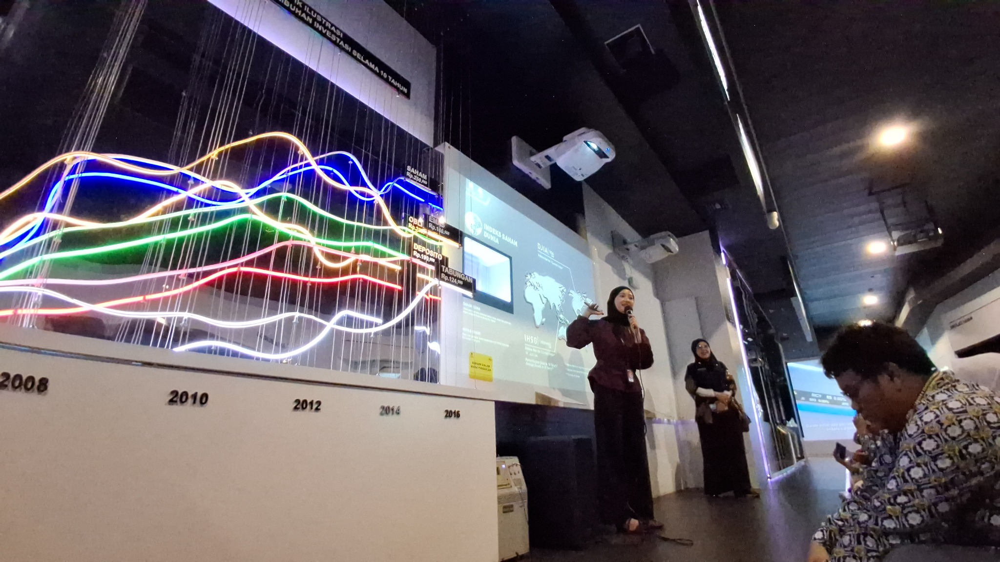
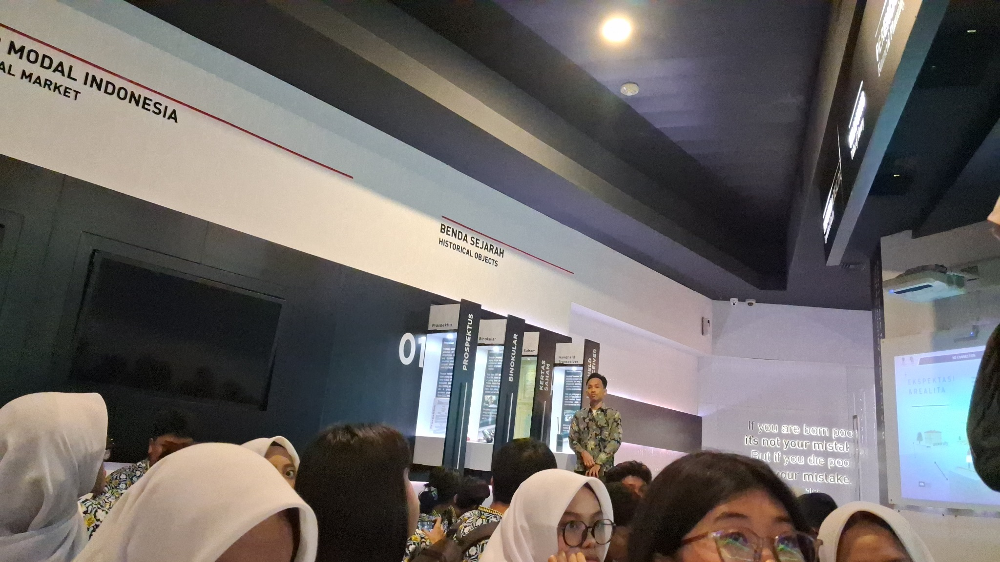

Pengenalan BEI
Mengenal Bursa Efek Indonesia dan perannya dalam kegiatan pasar modal.
DOKUMENTASI KEGIATAN SEKOLAH
Pengalaman belajar secara langsung melalui kunjungan industri ke Bursa Efek Indonesia (BEI).
Jelajahi kegiatan →BURSA EFEK INDONESIA
Bursa Efek Indonesia (BEI) atau Indonesia Stock Exchange (IDX) merupakan penyelenggara pasar modal di Indonesia. BEI menyediakan sistem dan sarana bagi perdagangan efek, seperti saham dan instrumen pasar modal lainnya.
Melalui kunjungan ini, peserta dapat mengenal peran BEI, memahami dasar investasi, serta melihat bagaimana informasi pasar modal disampaikan kepada masyarakat.
Kunjungi situs resmi BEI ↗BELAJAR LANGSUNG
Beberapa momen dan materi yang didapat selama kegiatan kunjungan.
Mengenal Bursa Efek Indonesia dan perannya dalam kegiatan pasar modal.
Mendengarkan penjelasan mengenai saham, investasi, dan indeks saham.
Melihat gambaran proses transaksi dan memahami bahwa harga saham dapat berubah.
Mengamati area edukasi serta mengabadikan kegiatan selama kunjungan.
MOMEN KUNJUNGAN
Sepuluh foto kegiatan dan suasana di lokasi kunjungan.










DOKUMENTASI VIDEO
Putar video dokumentasi untuk melihat rangkaian pengalaman kami selama kunjungan industri.
APA YANG KAMI PELAJARI?
Kunjungan industri ke Bursa Efek Indonesia memberikan pengalaman baru tentang dunia pasar modal. Kami jadi lebih memahami fungsi BEI, mengenal dasar investasi, dan mengetahui pentingnya mencari informasi sebelum mengambil keputusan keuangan. Kegiatan ini menambah wawasan serta menghubungkan materi pembelajaran dengan lingkungan kerja secara langsung.